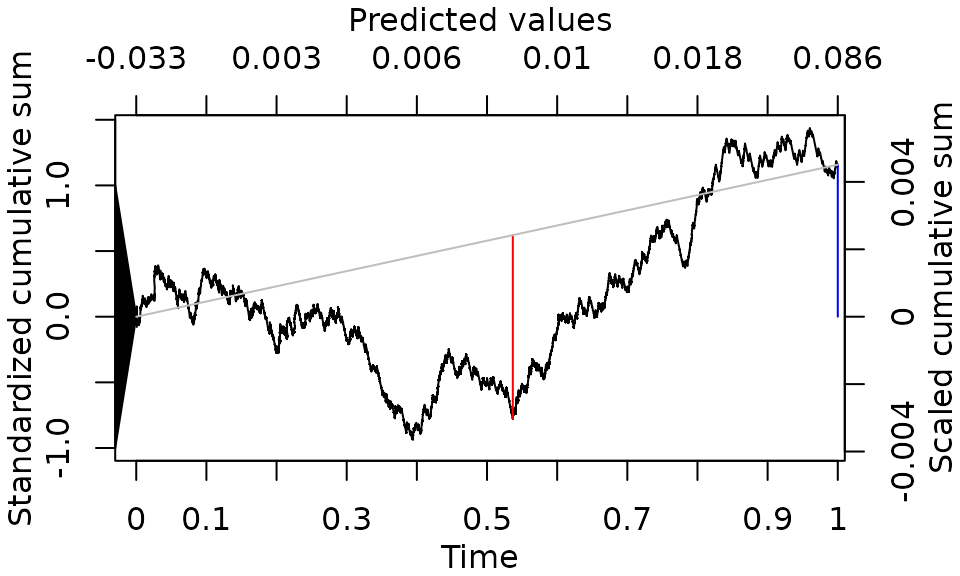

vignettes/tutorialITE.Rmd
tutorialITE.RmdThis is a short companion to the main cumulcalib tutorial,
focused on cumulcalibITE(), which assesses the
moderate calibration of predicted individualized
treatment effects (ITEs). Where cumulcalib() evaluates
predicted risks, cumulcalibITE() evaluates predicted
treatment benefits: the reduction in outcome risk a patient is expected
to gain from treatment.
For an ITE model, moderate calibration means that, among individuals with a predicted treatment effect of , the average true treatment effect is also . Following the same idea as for risks, this is assessed on the cumulative-sum domain: after ordering the validation sample from the smallest to the largest predicted ITE, a standardized process of cumulative prediction errors (the process) is constructed that, under the null hypothesis of moderate calibration, converges to Brownian motion. Inference, visualization, and summary metrics then follow from the properties of Brownian motion. Because treatment benefit is never observed at the individual level (one potential outcome is always counterfactual), the cumulative errors are built from an estimator of the cumulative treatment effect within the ordered sample. See the original paper for the methodology.
Constructing the process requires the (history-)conditional mean and variance of the increments, and these depend on the true baseline (control) risks, which are unknown. The package offers two approaches to resolve this, both of which assess the same null hypothesis of moderate calibration of the ITEs:
Conditional approach – substitute the model’s
predicted baseline risks for the unknown true risks. This is
valid conditional on those predicted risks being calibrated
within strata of predicted ITE, and it requires the model to output
baseline risks. In cumulcalibITE(), this approach is
selected by supplying the baseline risk through the p
argument.
Marginal approach – replace the cumulative
conditional mean and, crucially, the cumulative conditional
variance of the process with their
marginal counterparts, estimated from the observed
event rates in each treatment arm. This requires no baseline risks and
applies to any ITE model (including those that do not predict risks). It
is selected by omitting p. The marginal
approach is approximate (heuristic), but in simulations it performs
comparably to the conditional approach.
For brevity, this tutorial demonstrates the marginal
approach; the conditional approach is shown at the end and is
obtained simply by adding p.
We use the GUSTO-I data from the predtools package. The
treatment is thrombolytic therapy: accelerated tPA (the active arm,
a = 1) versus streptokinase (SK, control,
a = 0); we restrict the data to these two arms. The outcome
y is 30-day mortality. To obtain a genuine ITE model we
include treatment effect modifiers (treatment-by-sex and
treatment-by-age interactions), so that the predicted benefit varies
across individuals.
library(predtools)
data(gusto)
set.seed(1)
gusto <- gusto[gusto$tx %in% c("tPA", "SK"), ]
gusto$y <- gusto$day30
gusto$a <- as.numeric(gusto$tx == "tPA") # 1 = tPA (active), 0 = SK (control)
gusto$female <- as.numeric(gusto$sex == "female")
gusto$kill <- (as.numeric(gusto$Killip) > 1) * 1
gusto$miloc <- relevel(factor(gusto$miloc), ref = "Inferior")
gusto$sbp <- pmin(gusto$sysbp, 100)As in the main tutorial, we develop the model on the non-US sub-sample and validate it on the US sub-sample. Treatment enters the model as a main effect and in interaction with sex and age (our hypothesized effect modifiers).
dev_data <- gusto[!gusto$regl %in% c(1, 7, 9, 10, 11, 12, 14, 15), ]
val_data <- gusto[ gusto$regl %in% c(1, 7, 9, 10, 11, 12, 14, 15), ]
model <- glm(y ~ female + age + miloc + pmi + kill + sbp + pulse + a + a:female + a:age,
data = dev_data, family = binomial(link = "logit"))The predicted ITE for each validation patient is the difference between their predicted risk under control and under treatment (the predicted reduction in mortality risk):
val_data$pi0 <- predict(model, newdata = transform(val_data, a = 0), type = "response") # baseline (control) risk
val_data$pi1 <- predict(model, newdata = transform(val_data, a = 1), type = "response") # risk under treatment
val_data$d <- val_data$pi0 - val_data$pi1 # predicted ITEThe mean predicted ITE in the validation sample is 0.008, compared with an observed average treatment effect (ATE) of 0.012.
To use the marginal approach we call cumulcalibITE()
with the outcome y, the predicted ITE d, and
the treatment indicator a – and we omit
p. Following the recommendation in the paper, we use the
two-part "BB" (bridge) test, which decomposes the
assessment into a mean-calibration component and a bridge component and
generally has higher power.
library(cumulcalib)
res <- cumulcalibITE(val_data$y, h = val_data$d, a = val_data$a, method = "BB")
summary(res)
#> Moderate calibration assessment of individualized treatment effects
#> Approach: marginal
#> C_n (mean calibration error): 0.00450999603471589
#> C* (maximum cumulative calibration error): 0.00559910543541154 (observed benefit > predicted)
#> Location of maximum cumulative error: time = 0.96015470901985, predicted ITE = 0.044583275537806
#> Method: Two-part Brownian bridge (BB)
#> S_n (Z score for mean calibration error): 1.15774227105491
#> B* (test statistic for maximum absolute bridged calibration error): 1.39879642646784
#> Component-wise p-values: mean calibration=0.246969228103392 | Distance (bridged)=0.0399501171176506
#> Combined p-value (Fisher's method): 0.0554357836981584The bridge test reports two components and a unified p-value:
S_n), a necessary condition for moderate
calibration, with p-value 0.247;Here the unified p-value is close to, but above, the 0.05 level; the signal comes mainly from the bridge component, indicating mild non-linear miscalibration of the predicted ITEs across their range rather than a systematic mean bias.
The returned object is plotted with the same plot()
method used for risks:
plot(res)
The primary X and Y axes show the time and location components of the
standardized
process; the top X-axis shows the corresponding predicted ITEs, and the
right Y-axis shows the scaled (un-standardized) cumulative errors, whose
terminal value is C_n. The blue markings relate to the
mean-calibration component (the terminal value and its significance
threshold) and the red markings to the bridge component. One quirk
specific to the marginal approach is that, because the marginal variance
is not guaranteed to be monotone, the process can occasionally show
small negative time increments.
If the model produces baseline risks and they can be assumed
calibrated within strata of predicted ITE, the conditional approach is
available simply by passing those baseline (no-treatment) risks via
p. Here that is pi0:
# Conditional approach: supply the predicted baseline (control) risk via p
res_conditional <- cumulcalibITE(val_data$y, h = val_data$d, a = val_data$a,
p = val_data$pi0, method = "BB")The conditional approach has a firmer theoretical footing (a functional central limit theorem can be established for it), but it relies on the calibration of the predicted baseline risks; the marginal approach avoids that assumption at the cost of being heuristic.